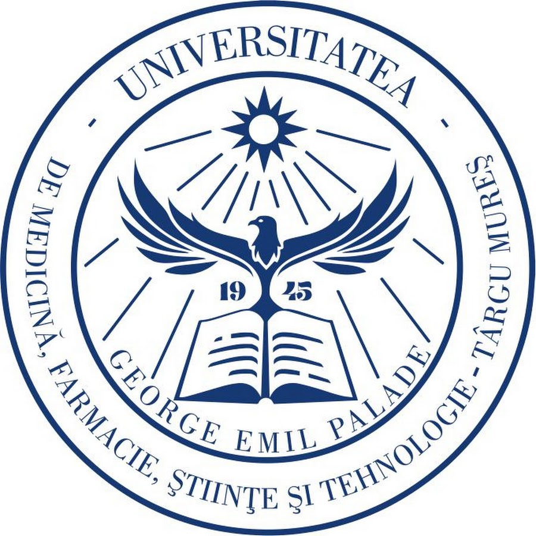

Dr. Kovács István
Egyetemi tanár, Tanszékvezető

Az UMFST Élettani Tanszéke az orvosi és gyógyszerészeti képzés alapvető elméleti és gyakorlati élettani ismereteit oktatja.
Egyetemi tanár, Tanszékvezető

Egyetemi adjunktus
| Oktató | Nap | Idősáv | Iroda |
|---|---|---|---|
| Dr. Kovács István | Hétfő | 10:00 – 12:00 | Főépület, 102. terem |
| Dr. Szabó Anna | Szerda | 14:00 – 16:00 | Főépület, 105. terem |